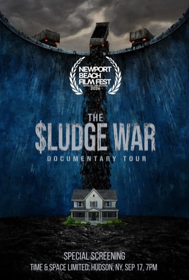

About the film

DC Premiere
November 7, 2026
, 4:15 PM
U.S. Navy Memorial
Galassia Grassetto thought she had found a quiet, safe place to live. Then she discovered what had been deliberately buried beneath her community. What began as a local mystery became a five-year investigation that reaches far beyond one neighborhood, into a secretive federal program designed to make toxic waste disappear. Drawing on never-before-seen depositions, undercover footage and the David-and-Goliath fight of a senior federal scientist turned whistleblower, Grassetto pieces together how this material found its way into the homes and lives of millions of Americans without their knowledge, and why a growing number of states are now beginning to challenge it.
A tenacious work of citizen-led reporting,
The Sludge War
weighs official assurances against the evidence, and asks what communities are owed when the people living with the consequences are the last to know.
Screening followed by a Q&A with director Galassia Grassetto and investigative journalist Neela Banerjee, who previously served as Chief Climate Editor at NPR and reported for The New York Times. The conversation will delve into the nationwide investigation and expose how sewage sludge is making its way into public spaces across Washington, DC.
Galassia Grassetto
Neela Banerjee
At the festival
More films on these topics
 Rhapsody on the Outlaw OceanIan Urbina2026 · 61 min
Rhapsody on the Outlaw OceanIan Urbina2026 · 61 min- Short Strand: Against the GrainSteven Leckart · Maia Wikler2026
 The Lost Souls of SyriaStéphane Malterre2023 · 99 min
The Lost Souls of SyriaStéphane Malterre2023 · 99 min- The GrabGabriela Cowperthwaite2022 · 104 min
- 3212 Un-RedactedBrian Epstein, James Gordon Meek, Andrew Fredericks2021 · 100 min
 Enemies of the StateSonia Kennebeck2020 · 104 min
Enemies of the StateSonia Kennebeck2020 · 104 min